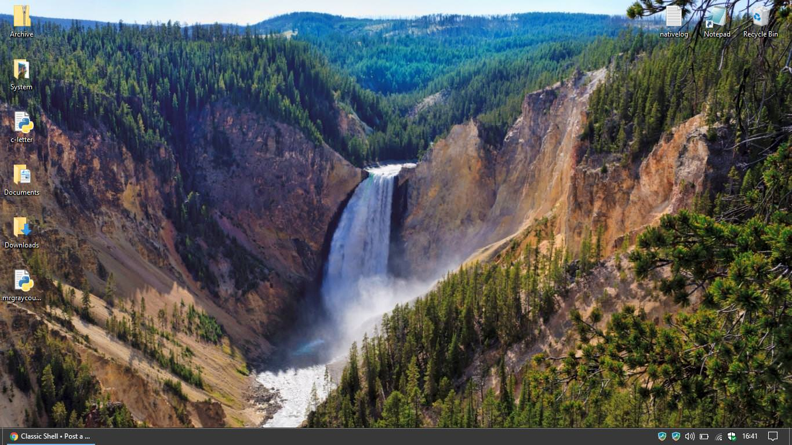

I wanted a start button that wasn't obvious, and blended with Windows 10, while not seeming out of place. So I created a start button that mirrors the Show Desktop button.
Here's how it looks:

And here's the image. Currently, it does require Small Taskbar Buttons to be enabled to look good, but you could probably fix that with some stretching. I won't be adding a regular version for now.
| Attachments: |
File comment: Small Buttons Windows Start Assymetrical.png [ 310 Bytes | Viewed 3569 times ] |